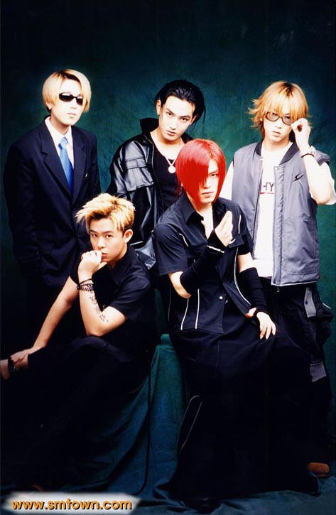

K-Pop ist die Abkürzung für Korean Popmusik und ist ein Sammelbegriff für koreanischsprachige Musik, welche aus Südkorea stammt. K-Pop wird in Südkorea auch häufig als Gayo (가요) bezeichnet. Dieses Musikgenre wurde durch die westliche Musik auch stark beeinflusst und dies spiegelt sich in der Musik wieder. Des Weiteren handelt es sich um Girl oder Boybands, die meistens aus 5 bis 8 Mitgliedern bestehen, die von Talentagenturen zur Perfektionismus, im jüngerem Alter, gezwungen werden.
Wir haben in den letzten Tagen eine kulturell mehrdimensionale Belagerung Südkoreas erlebt. Für eine Weile hatte K-Dramas, das steht für die Abkürzung korean Drama, die Welt erobert habennund anschließend kamen vielversprechende koreanische Kosmetika in unser Leben, aber das koreanische Phänomen, das in unserem Leben derzeitig den größten Einfluss hatte, war definitiv das Musikgenre K-Pop, die verschiedene Länder nacheinander außerhalb Asiens eroberten hat.
Ihren Ursprung hat diese Musikrichtung in den 1990er Jahren und streckt sich bis 1950 aus und umfasst viele Musikgenres unter einem Dach, welches mehrere Elemente aus Hip-Hop, Rock, Elektropop, R'n'B, Rap, Pop und Seoulzusammenfasst und ineinander verlaufen lässt.
Die erste K-Pop Gruppe
Die Geburt und der Beginn für K-Pop war der 11.April 1992, als die dreiköpfige Gruppe'Seo Taiji and Boys'zum ersten Mal ihre Musik im Fernsehen aufführten Anschließend wurden einer der berühmtesten Argenturen in Korea gegründet, wie zum Beispiel SM Entertainment (1995) und JYP Entertainment (1997) und YG Entertainment (1998). Anschließend wurde die allererste K-Pop Idolgruppe formatier und diese debütierte 1996 als Gruppe 'HOT' (Highefive Of Teenagers) mit fünf Mitgliedern unter der Argentur von SM Entertainment.
Diese drei, zählten bis zum Jahr 2018 zu einer derdrei größten Argenturen, doch jetzt gilt derzeitig nur eine Argentur als "die" größte, das ist BigHit, welches die Argentur von BTS ist. Durch die Gruppe BTS stieg diese Argentur zu einer der größten und BTS gilt als die erfolgreichste südkoreanische Gruppe Weltweit.

H.O.T. Gruppe mit den Mitgliedern von links nach rechts : Heejun, Woohyuk, Tony, Kanta, Jaewon
Logos der bekanntesten Argenturen
Wie entstehen die K-Pop Idole
K-Pop Idole treten meisten im Alter von 11-16 Jahren einer der Unternehmensargenturen bei und müssen in einer der Bereichen wie Singen, Rappen und Tanzen ihren Talent zeigen um aufgenommen zu werden. Anschließend trainieren sie jahrelang, neben der Schule unter der Argentur für das Debütieren als Idol. Diese werden als 'Trainee' bezeichnet und bevor sie meistens als Gruppe debütieren, wird nochmal unter allen denen, die besten gewählt. Dies kann auf zwei Wegen geschehen, entweder durch eine Fernsehrsendung, wo ca.20 Trainees sich beweisen müssen und jede Woche jemand seinem Traum lebewohl sagt und wo die Zuschauer auch mitentscheiden können oder ganz geheim durch die alleinige Entscheidung der Argentur. Auf diesem Weg opfern sie ihre Jugend um berühmt zu werden.
Was macht K-Pop so einzigartig
Koreanische Band und Künstlernamen sind häufig von der SMS-Sprache und Kunstwörtern inspiriert. Bandmitglieder geben sich für Ausländer einfach einzuprägende Künstlernamen wie T.O.P. und G-Dragon (beide von BigBang) oder Suzy von Miss A, die wiederum sehr erfolgreich parallel eine Solokarriere machen.
Während Kpop mit seinen Idolgruppen ganz anders ist als westliche Musik, ist es leicht zu verstehen, warum viele Menschen jetzt süchtig danach werden.
K-Pop ist nicht nur für die Ohren bestimmt, sondern vor allem auch für die Augen.
Die Melodien sind eingängig, die Choreografien sind beeindruckend und die Gruppenmitglieder sind wunderschön für das Auge.
Die visuelle Performance fängt mit den aufwendig produzierten Musikvideos an, die häufig eine kurze Geschichte erzählen. Die Geschichte wird durch zahlreiche Szenen unterbrochen, in denen die Protagonisten perfekt durchchoreografierte Tänze präsentieren. Dabei tragen die Tänzer unterschiedliche Outfits vor den wechselnden Bühnenbildern. Die Bewegungen der einzelnen Tänzer sind dabei so synchron, dass sie den Synchronschwimmern bei den olympischen Spielen kaum nachstehen.
Es gibt einen speziellen koreanischen Slangbegriff namens 칼 군무 (Kalgunmu), der „perfekt synchron tanzen“ bedeutet. Dies kann man verwenden, um die Lieblings-Kpop-Darsteller zu beschreiben.
Verstärkt wird die Bewegungskunst durch zusätzliche Backgroundtänzer, auf die nicht nur Solokünstler, sondern auch größere Bands, zurückgreifen. Außerdem sind die Künstler mit sehr modischer Garderobe ausgestattet und auffällig geschminkt. Manche Künstler setzen mit sehr glamourösen bis schrillen Outfits sogar Trends in der Mode- und Kosmetikbranche.
Auch wenn nur hinter vorgehaltener Hand darüber gesprochen wird: Jede weiß, dass einige der Künstler Schönheitsoperationen hinter sich haben. Die Koreaner sehen diese Verschönerung aber eher pragmatisch und thematisieren es in den Medien weniger als im Westen.
Die beliebteste Gruppe derzeitiig
Zu den bekanntesten K-Pop-Gruppen derzeitig, denen auch viele Deutsche-Fans haben angehören, ist BTS (Bangtan Boys), EXO (aufgeteilt in EXO-M für die chinesische und EXO-K für die koreanische Version), Big Bang, Got 7 und Black Pink. Viele der K-Pop-Bands nehmen ihre Songs in verschiedenen Sprachen auf, um ein möglichst großes Publikum in unterschiedlichen Ländern zu bedienen. Vor allem in Ländern wie China und Malaysia hat der K-Pop Millionen Anhänger. Hier dient die Musik dazu, Barrieren zwischen verschiedenen Bevölkerungsgruppen zu überwinden. Das hat in gewisser Weise auch die Girlgroup Red Velvet geschafft, die als erste K-Pop-Band im nordkoreanischen Pjöngjang auftreten durfte - ein Meilenstein in der Annäherung zwischen den beiden Ländern, die sich offiziell noch immer im Kriegszustand befinden.
Zu einem Gruppen-Name gehört immer dazu noch sich ein Namen für die Fans zuüberlegen. Das bedeutet, jede entstandene Gruppe hat einen Fan-Name. Die Fans von BTS heißen 'ARMY' und die von BlackPink 'Blinks'.
Jede Gruppe hat auch ihren persönlichen "lightstick" die für Konzerte gerne verwendet wird. Es gibt selten Gruppen, die keinen Lightsitck haben oder erst sehr spät nach ihrem Debüt (ca 5 Jahre). Zu dieser Gruppe gehört eine koreanische Band N.Flying. Sie hatten keinen Lightstick und so haben die Fans beschlossen eine Kartoffel auf einem Schaschlikspieße zu stecken. In der offizielle Version, die im Januar 2020 raus kam, befindet sich eine leuchtende Kartoffel, die sie von den Fans übernommen haben.
Der sogenannte Army Bomb OceanLightstick von der Gruppe Exo Lightstick von N.Fia (die Fans von N.Flying)N.Flyings offizieller Lightstick
Neben den Lightsticks und dem Fan-Name gibt es den sogenannten Fanchant. Das ist der Part in einem Song, den die Fans für Singen. Am Anfang werden die ganzen Mitgliedernamen aufgezählt und dann werden gewisse Stellen von den Fans gesungen. Es gibt einen besonderen Fanchan und das ist der von der Gruppe Ikon, die unter der Argentur von YG sind und von deren Fans IKonic.
Koreanische Welle (한류)
Seit dem Jahr 2000 spricht man von Hallyu, der koreanischen Welle. Hallyu meint die um sich greifende Popularität der südkoreanischen Popkultur. Besonders erfolgreich ist K-Pop natürlich in asiatischen Ländern wie Südkorea, China, Japan und Indonesien. Mittlerweile hat die Welle aber auch Nord- und Südamerika, Europa und Teile von Afrika erfasst. Hallyu, die sich anfangs nur auf die Musik bezog, gibt es inzwischen auch bei Fernseh- und Kinofilmen und Serien (diese werden als K-Drama bezeichnet), beim Essen und beim Taekwondo, welche aus Südkorea stammen.
Die beliebtestens Songs
Hier gibt es ein paar Songempfehlungen und welche, die in Korea sehr bekannt sind und reichlich Rekorde gebrochen haben.
red velvet- ice cream cake (2015), dumb dumb (2015), russian roulette (2016), Red Flavor (2017), peek a boo (2017), bad boy (2018), zimzalabim (2019)
gfriend - Me gustas tu (2015)
exid- up and down (2015)
4 minute - crazy (2015)
Twice - like ooh aah (2015), TT (2016), Cheer Up (2016), heart shake(2017), knock knock, Signal (2017), Likey (2017), Dance the night away (2018), what is love?(2018), fancy (2019)
IOI - very very very (2016)
BlackPink - Boombayah (2016), As if it´s your last (2017), DDU Du DDU DU (2018), Kill this love (2019), How You Like that (2020)
iZ * one - La vie en rose (2018)
Momoland - bombmbom (2018), baam (2018)
g(idle)- latata (2018)
everglow - bon bon chocolat (2019)
itzy - dalla dalla (2019), icy (2019)
Oh my girl - non stop (2020)
______
Solo Artisten:
park jiyoon- adult cerenomy (2000)
Rain - Rainism (2008)
Hyuna - bubble pop! (2011), roll deep (2015)
PSY - Gangnam Style (2012), gentelman (2013), new face


")